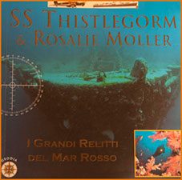
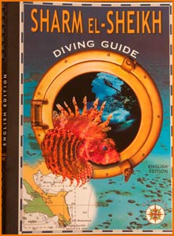
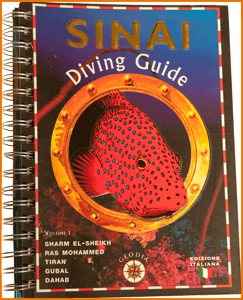
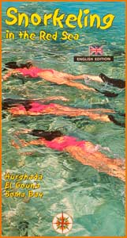
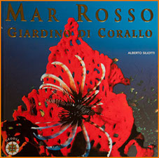
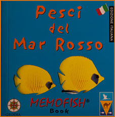
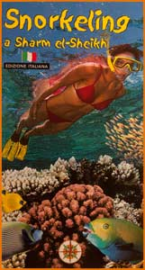
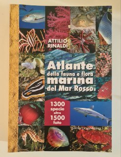

Guide Subacquee
“Sharm el Sheikh Diving Guide”, “Hurgada e Safaga”, “Taba e Dahab", “Guide Snorkel di Sharm e Hurgada”, “Pesci del Mar Rosso”, “I Grandi Relitti”, “Giardino di Corallo” e "Sinai Diving Guide vol.1", "Atlante della Fauna Marina del Mar Rosso, di Attilio Rinaldi".








Premi Nazionali e Internazionali
2 Palma d’Oro al festival Mondiale – Antibes Francia
2° premio (Palma d'Argento) al “40° Festival Mondial De L'Image Sous Marine”, Marsiglia 2013
2° premio (Palma d'Argento) al “40° Festival Mondial De L'Image Sous Marine”, Marsiglia 2013
Premio internazionale video “Idea” SUWFF, a Belgrado, Serbia
1° premio categoria professional “Carins Underwater Film Festival”, Australia
2° posto categoria professional “Marmara Underwater Festival”, Turchia
Premio internazionale video “Idea” SUWFF, a Belgrado, Serbia
2° posto categoria professional “Festival PAF”, Tachov 2014
1° premio “Marmara Festival“, Istanbul
2° premio “Ocean Geographic Competition”, 2013
1° premio documentari brevi (Camogli) “International Marine Reserves Film Festival”
2° posto categoria professional “MIMA” Spagna, 2014
1° premio "Categoria Produttori Indipendenti", Belgrado
1° premio "Categoria Documentari Brevi"
Pelagos International Festival” Roma
Premio Coastal Culture “San Francisco International Ocean Film Festival”
1° premio “Festival de l'Image Susmarine” , Marsiglia 2012
1° premio ”International Festival” ,Belgrado 2012
Premio speciale documentario sugli animali “Festival Internazionale Antibes", 2006
2° posto “Festival Internazionale Pelagos” Roma, 2005
Premio speciale per il "Miglior Documentario" Genova, 2005
Premio speciale della giuria “Festival Internazionale Antibes”, 2005
Premio della giuria giovane “Festival Internazionale Antibes”, 2005
1° premio “Celebrate the Sea”, Kuala Lumpur, Malaysia, 2003
1° premio “Setmana Internacional Image Susmarina” Spagna, 2002
1° premio “Gran Premio Sisa de Oro“ Isole Canarie, 2002
1° premio “Festival de l'Image Susmarine” , Antibes 2001
2° posto “Image” Inghilterra, 2001
1° premio “Pelagos” Roma, 2001
1° premio "Lugano", Svizzera 2001
1° premio “Excelsior” Targa Parlamento Europeo Sezione Documentari Roma, 1999
1° premio Genova, 1999
Premio “Brigitte Cruickshank, Festival de l'Image Susmarine” Antibes, 1999
1° premio “Festival de l'Image Susmarine” Antibes, 1999
2° posto "Lugano", Svizzera 1998
1° premio "Amalfi", 1997